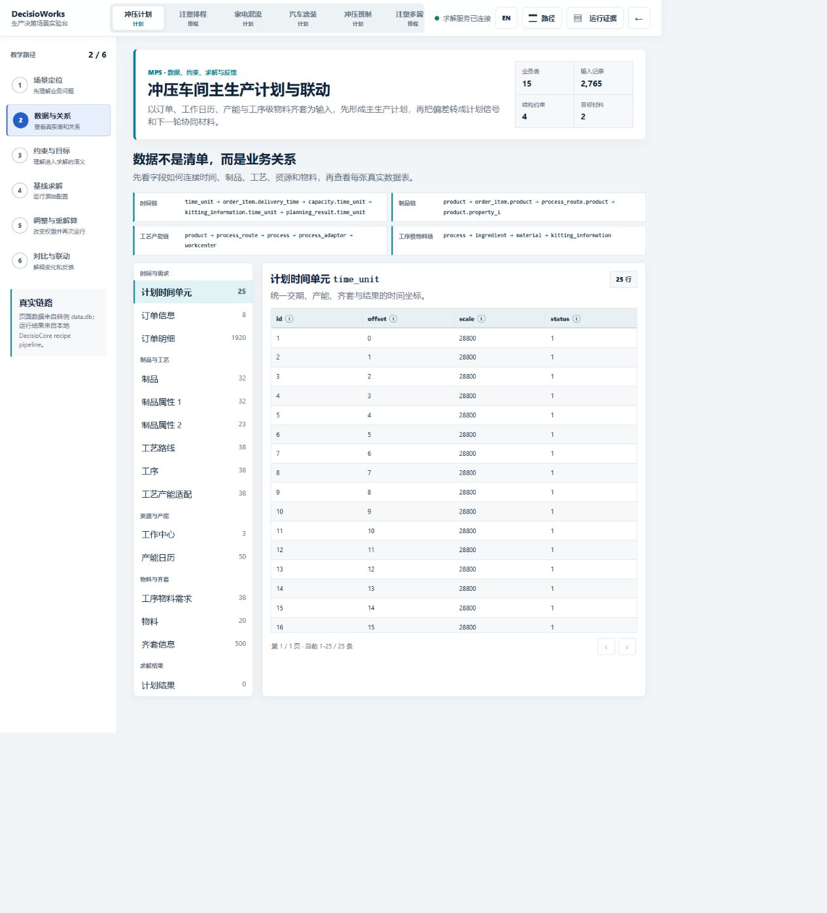

Applies to DecisioWorks v1.4.0
Stamping planning case: from 1,920 order lines to a controlled planning chain
This case uses the reference StampingWorkshop/data.db
and the production_planning orchestration recipe to show
how orders, capacity, and material readiness become planning inputs. The
sample inspected on 2026-08-31 contained 1,920 order lines, 50 capacity
records, 38 operation-level material links, 500 kitting records, 25 time
units, and 3 work centers. Its database integrity check passed.
1. Input data
Order lines in order_item provide product, due time, and
quantity. Routes and operations connect products to work centers.
ingredient binds material demand to operations,
kitting_information provides material availability by time,
and capacity.used is the fraction already occupied or
unavailable, from 0 to 1. It is an input, not resource utilization
calculated from this run.
2. Constraints and objectives
The supplied recipe enables capacity, demand, and kitting
constraints, uses soft capacity, and leaves inventory constraints
disabled. Its objective uses job_bias=-0.001 and
waittime=1.0, mapping due-date and completion-time pressure
to the workshop plan's cumulative-waiting objective material. The
configured solver request is 16 threads and 120 seconds, subject to
edition and license limits.
3. Processing flow
The action chain is acquisition → constraint parsing → generation → selection → evaluation → optional dispatch. Dispatch leaves the standard database unchanged; only an explicitly configured standalone JSON result file can be written.
4. Outputs and interpretation
| Output | How to read it | Acceptance question |
|---|---|---|
| Planning result | Quantity by time, work center, and operation | Does it cover demand on the shared time coordinate? |
| Delivery bias | Drill down to product or order | Is risk caused by quantity, timing, or release? |
| Workload | Compare aggregate and time-unit detail | Does an average hide a bottleneck? |
| Idle and waiting | Use an explicit time unit | Is it caused by kitting, capacity, or trade-off? |
| Objective-material audit | Verify direction, weight, and meaning | Has a weighted value been confused with a physical quantity? |
Baseline and rerun comparisons should keep the data version fixed, change only a few objectives, rules, or resource conditions, and retain the configuration difference.
5. Observed runs and comparison
The following records come from DecisioWorks v1.4.0 Commercial
Edition runs under an Enterprise license on 2026-08-31. The
API baseline used 16 threads with a 120-second limit and returned
ok in 14.41 seconds. The adjusted run kept the same data,
constraints, and compute settings, changing only job_bias
from -0.001 to -0.003 and
waittime from 1.0 to 2.0; it
returned ok in 14.29 seconds. Both runs produced one valid
candidate, 66 result records, 12 action events, and no errors. Success
here means a usable solution was found, not that global optimality was
proved.
For the baseline, total demand and output were both 680,500, final shortage was zero, and quantity coverage was 100%. On-time delivery still requires checking order and time-unit details. Available capacity was 1,188,000; processing load was 371,588.48; planned load including setup and waiting was 377,080.42; utilization was about 31.74%. These capacity and load values use the sample analysis output's units and should not be read directly as minutes.
The adjusted run kept these aggregate metrics unchanged, while the
weighted job_bias contribution changed from
-7,854.678 to -23,564.034. This confirms that
the weight entered the calculation. Equal aggregates do not establish
identical task assignments; compare individual planning records as well.
Because both weights changed together, the comparison does not isolate
the effect of either weight.



The screenshots come from a separate Commercial Edition Scenario Lab run that completed with two threads and 60 seconds. The API records above use 16 threads and 120 seconds. Review each set against its own data version, configuration, and output rather than treating them as one experiment. For a business deployment, apply the same comparison method to your data, equipment conditions, and acceptance criteria.
Reading the original Chinese screenshots
Start with the left-side baseline configuration, then the result status and aggregate metrics on the right. Finally inspect the work-center and time-unit breakdowns and the objective-material audit. The original interface labels are retained to preserve the run evidence.
| Label in the screenshot | English meaning | Reading note |
|---|---|---|
| 基线方案 A / 基线结果 A | Baseline configuration A / baseline result A | Keep this configuration with this result |
| 求解时限 / 求解线程 | Solve time limit / solver threads | This screenshot shows 60 seconds and 2 threads |
| 需求满足率 / 期末欠产量 | Demand fulfillment / final shortage | Quantity fulfillment does not prove on-time delivery |
| 产能利用率 | Capacity utilization | A percentage calculated from the result |
| 实际加工负荷 | Actual processing load | Displayed in minutes: 6,193.14 in this screenshot |
| 实际计划占用 / 切换与等待损失 | Planned capacity occupation / setup and waiting loss | Minutes, unlike the unconverted API values above |
| 工作中心级产能 / 时间单元级产能 | Capacity by work center / by time unit | Review bottlenecks at the same granularity as constraints |
| 目标材料审计 | Objective-material audit | Check the objective's direction, weight and interpretation |
| 基线 / 调整 / 差异 | Baseline / adjusted / difference | Compare like-for-like units in the A/B view |
An em dash in the PlanBias or PlanSignal count means no numeric count is shown there; it should not be read as a confirmed zero.